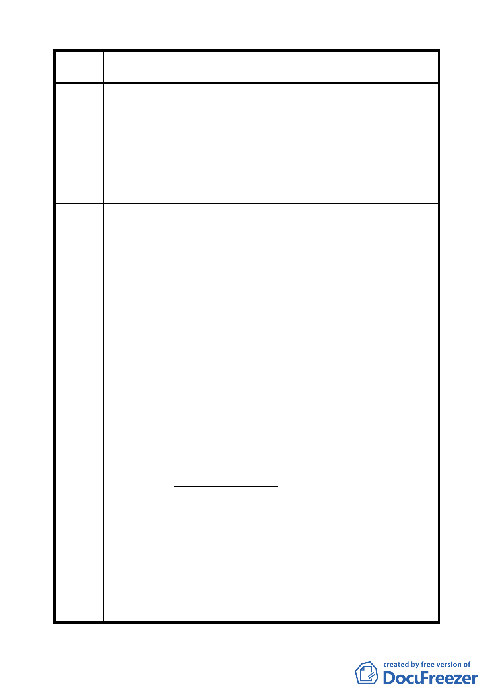

案 名 配合第二代展會中心變更臺北市南港經貿園區特定專用區 C12、
C13 街廓商業區及周邊商業區細部計畫案
貿園區之第二代展會中心等相關建設係為國內近年重大建
設，且該細部計畫擬以都市更新方式辦理整併開發，甚為符
合 貴府加速臺北市都市更新發展之政策，基於陳情人等願
意配合政府重大建設開發之立場，冀 貴府於推動重大建設
之同時，亦能體恤我等未來所面臨都市更新之實務問題，以
保障升斗小民微不足道之權益，並能順利推動大規模都市更
新，以圖全體市民之福祉。
為提高指定地區編號 B、C 街廓之接受整併開發誘因，需以有效降
低接受基地未來之開發（營建）成本與顯現容積獎勵之實質助益，
建議於細部計畫中增加訂定獎勵規定，說明如下：
一、降低開發（營建）成本：
意即降低地區編號 A 土地之允建容積（樓地板面積）移轉與
法定應附設停車空間集中設置，所產生樓層數增加之營建成
本提高之衝擊。以建築設計而言，法定建蔽率與地下層開挖
率限制之放寬，可增加允建建築面積與地下層可開挖面積，
將有助於設計時減少樓層數。
以合理之都市規劃角度，對於建築基地開發限制規定之擬
訂，應能兼顧都市空間發展與街道景觀整體性，以及開發實
務之可行性，應鼓勵街廓大規模開發，故建議需達到一定基
本條件始得適用放寬規定：1.地區編號 B、C 街廓可分別申請；
建議辦
2.地區編號 B、C 街廓申請適用放寬之基地面積最小規模，應
法 達到其所在街廓面積二分之一（含）以上；3.地區編號 A 之
容積可分別移轉，然每次移轉之規模需達土地與現有建築物
樓地板總面積之二分之一（含）以上。再以此基本條件適用
下列放寬規定，建議適用計算公式：
X 1 ＝ X × α × β……………………(1)
X：為放寬上限值
X1：為實際放寬值
α：（地區編號 B、C 街廓）接受基地，申請基地面
積佔所在街廓面積之百分比
β：（地區編號 A 街廓）移轉容積，申請移轉土地與
現有建築物樓地板面積佔總面積之百分比
(一)建蔽率：
建蔽率放寬上限為 20%，以此值為 X 代入公式(1)計算，
即為申請核准可增加之值。
8